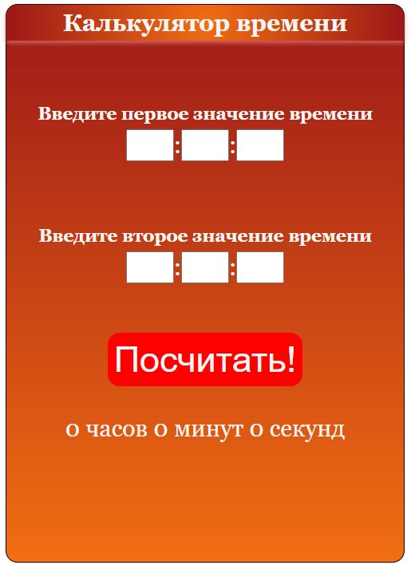

О калькуляторе времени
Калькулятор времени был написан мной еще две недели назад и выглядел примерно вот так:
Да, он не имел нужной стилистики, которую имеет калькулятор на сайте. Но главное, что функции свои он выполнял исправно! Калькулятор – довольно простое задание для тренировки.
Фактически, данный калькулятор можно представить в виде ряда функций, а именно:
- Конвертор из часов/минут/секунд в единую систему измерений – в секунды;
- Вычислитель времени;
- Конвертор из секунд обратно в часы;
- Алгоритм подбора слова к числу xD
Причем, вычислитель времени работает по принципу двух формул, а именно:
- Если первое значение меньше второго, то мы вычитаем второе значение из первого;
- Если второе значение меньше первого, то мы считаем, что данное значение находится в следующих сутках и вычитаем из суток значение первого времени с одновременным сложением значения второго времени.
И самое главное, о чем стоит сказать – алгоритм подбора слова к числу, на который у меня ушло больше всего времени. Выглядит он таким образом:
if (result.hrs == 1 || result.hrs == 21)
{
words.hours = 'час';
} else {
words.hours = 'часов';
}
if ((result.hrs >= 2 && result.hrs <= 4) || (result.hrs >= 22 && result.hrs <= 24))
{
words.hours = 'часа';
}.
А на этом всё, до новых встреч!
Воспользоваться калькулятором вы сможете по данной ссылке!